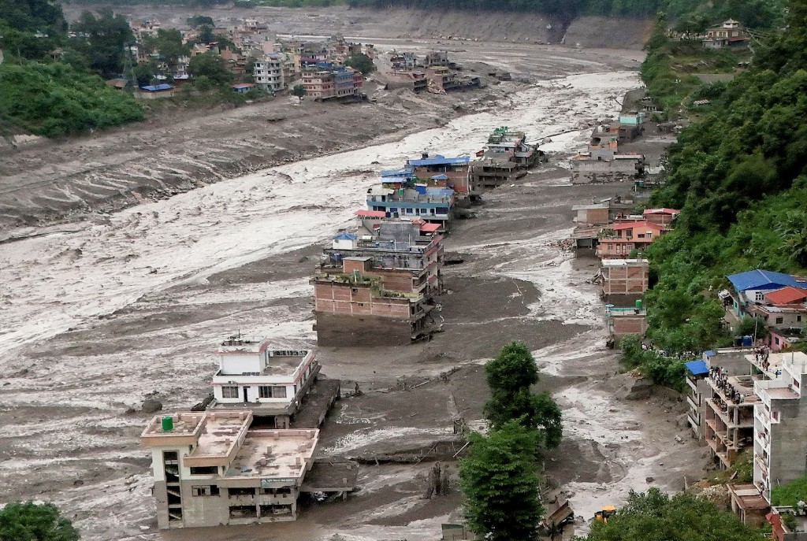

Map
Build the territorial picture collecting the facility, providers, warehouses, transport lines and client delivery. Overlay official hazard information.
From territorial dependencies to operational consequences, we help you identify where exposure demands action.
For teams responsible for operations, continuity and critical locations.
Territorial Exposure brings these dependencies into the assessment — connecting the site to the wider network it relies on to operate. The reading includes physical climate and territorial risk, infrastructure, logistics and supply-chain exposure, so operational resilience and business continuity rest on the territory, not only the plot.
TEAM — Territorial Exposure Assessment Method — is our proprietary, in-house methodology for translating territorial exposure around a facility into a clear, scored recommendation.
Build the territorial picture collecting the facility, providers, warehouses, transport lines and client delivery. Overlay official hazard information.
A workshop weighs criticality. TEAM scores each dependency: disrupt, slow, or limited impact.
Assign one of four action levels, matched to the nature of the business.
What you get
Not another map of the plot. A graded call on downtime, capital and continuity — so the next investment cycle, contingency line or restart plan is decided on evidence.

Every material dependency receives one of four management postures.
Keep the exposure in view and respond after an event.
Address it in a later investment cycle.
Plan intervention, including lined-up alternatives.
Single-point or unacceptable exposure. Act now.
Before capital is committed to a site that has not been read outside the fence.
To see which locations and dependencies deserve attention first.
When access, power or logistics almost failed and the plot map still looked clean.

From the studies
A site sat above the modelled flood extent. Production stopped anyway: the access road, the substation and the logistics operators were on the valley floor.
Read the studyThe useful meeting is Operations together with Risk or Strategy. Scope follows the number of facilities, the geography and the workshop required.